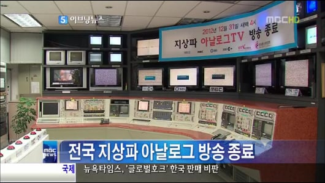

아날로그 방송과 디지털 방송 혼용한 과도기때는 어땠나면....
만약 야구보다가 만루홈런 친 장면이 나온다?
아날로그 TV 세대는 바로 함성소리 터지는데....
디지털 TV 세대는 기술적인 딜레이 때문에 몇초 뒤 함성소리 터지는게 국룰이었음 ㄹㅇ....

아날로그 방송과 디지털 방송 혼용한 과도기때는 어땠나면....
만약 야구보다가 만루홈런 친 장면이 나온다?
아날로그 TV 세대는 바로 함성소리 터지는데....
디지털 TV 세대는 기술적인 딜레이 때문에 몇초 뒤 함성소리 터지는게 국룰이었음 ㄹㅇ....
책 좀 읽어
뭔소리냐
아날로그로 보는 집은 생방 노딜레이로 보는데 디지털로 보는 집은 몇초 지연이 있었다고
못 알아먹을 내용이 있나ㄷ
진짜 책 좀 읽어라...
방송 딜레이 때문에 다른집에 스포당함
입닫어그냥
그게 그 차이였음? 그냥 수신기, TV 성능, 업체별, 방송사별 송수신 차이로 늦는게 아니었나.
디지털 TV의 경우 영상의 압축 및 오류검출과 디코딩 시간이 레이턴시가 걸리다 보니 늦음
[아날로그]
방송국 영상 신호
아날로그 전파 수신 및 복조
CRT 화면 출력 (끝)
[디지털]
1영상 디지털 변환 및 압축 (MPEG-2)
2데이터 패킷화 및 다중화
3오류 정정 및 디지털 전송
4수신 데이터 버퍼링
5MPEG 영상 디코딩
6해상도 변환 및 영상 처리
7화면 출력
그래서 같이 티비로 보는데 월드컵때 소리지르는 타이밍이 차이났구나
IPTV나 위성 셋톱은 딜레이 지금도 있음 지역케이블이 의외로 IPTV보다 딜레이 적음
공중파 이쪽은 HD도 딜레이 없음 그게 뭐 아날로그/디지털이라 그런게 아님..
아날로그 : 딜레이 없음
디지털 : 딜레이 있는 경우가 다수 있음.
그러면 아날로그 디지털 차이 맞는거지 뭐
축구보는데 다른집이 소리지르면 골 넣었구나 했지 ㅋㅋ
그래서 딴짓하다 소리지르면 티비봄
되게 신기하네, 아날로그 신호가 전기적 신호보다 더 빠른건가 ? 어떤 차이가 있는건가 ?
메가폰에 대고 노래 불러서 다른사람들한테 다 크게 들리면 아날로그,
스마트폰 마이크에 대고 노래 불렀는데 스마트폰에서 실시간으로 보정해서 잡음 없애고 송출하는데
그 시간이 3초정도 지연되면 디지털, 이렇게 생각해도 될 듯.
디지털 방송은 압축하고 셋톱에서 디코딩 해야해서 1초 정도 늦는다 했었음 ㅋㅋㅋ
근데 내가 알기론 지금도 송출현장에 대비하면 딜레이는 있는데 그냥 다 디지털이라 비교할 아날로그가 없어서 모르는거랬어 ㅋㅋㅋ
아날로그 + 지역방송(TV에 직접 선 꼽는 방식)은 2초 내외
셋톱박스는 5초 정도
인터넷은 10초 정도일껀데
여기에 이제 혹시나 안전지연을 곁들이니까요(가요방송에서 옷벗은 놈 덕분에 생김)
아니 가요방송에서 상의탈의를!
상의탈의가 아니라 남성이 하의 탈의 한겁니다...
하의실종을...
전송방식이랑 so차이때문에 있음
참고로 지상파에서 하는 UHD방송도 iptv로는 uhd안나옴
통신사쪽에서 uhd화질 전송 지원안함
아직도 그러나?
아날로그 방송은 종료됐지만 디지털 TV 중계하고 인터넷 중계 딜레이 때문에 비슷한 광경 나옵니다
ㅇㅎ
난 방에서 컴퓨터로 야구 보고 아빠는 거실에서 TV로 야구보는데
맨날 20초 일찍 스포당함
아날로그는 딜레이가 없는 수준이였구나
않이.. 그게 왜 또 그렇게돼..
어..?내가 이해 잘못 한거임?
위에 읽어보니 네 말이 맞는 거 같은데
뭔소리여